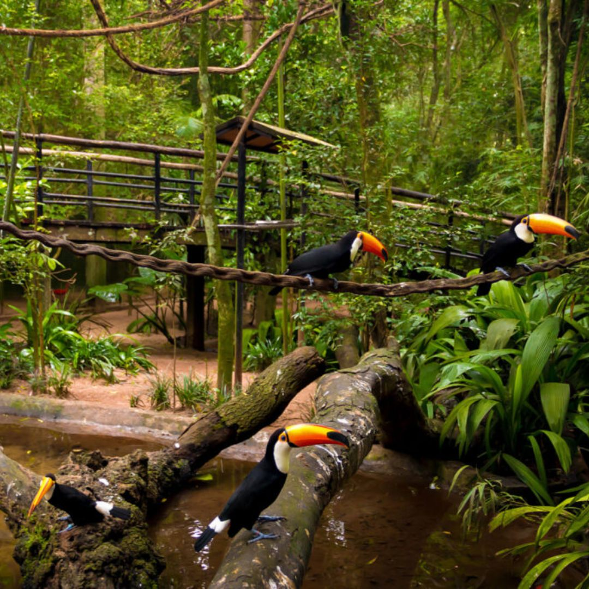
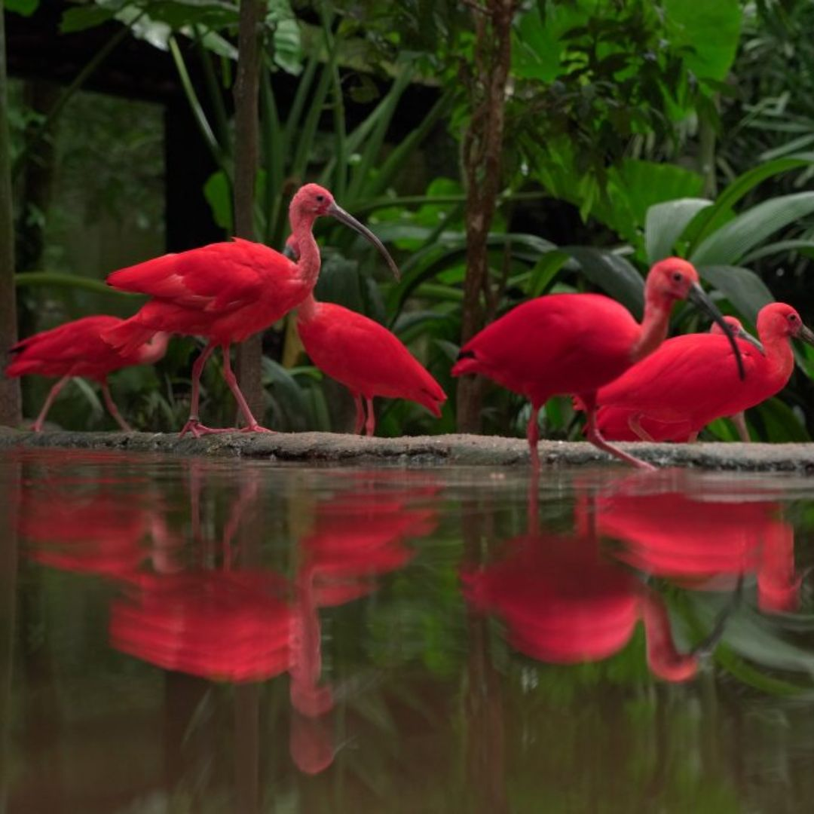

Parque das Aves
.jpg)
Foz do Iguaçu, Paraná • Brasil
★★★★☆
Sobre o destino
📍 Rodovia das Cataratas, km 17, Foz do Iguaçu - PR, 85855-750, Brasil.
O Parque das Aves, localizado em Foz do Iguaçu, é um refúgio para aves nativas e exóticas, oferecendo uma experiência única de contato com a natureza. Com trilhas imersivas e viveiros gigantes, os visitantes podem observar mais de 1.300 aves de 150 espécies diferentes. O parque também realiza um trabalho importante de preservação e educação ambiental. É um destino imperdível para quem visita a região de Foz do Iguaçu, proporcionando uma imersão no mundo das aves.


Comentários (2.340 avaliações)
“O Parque das Aves oferece uma experiência única de imersão na natureza, onde é possível observar de perto aves
de diversas partes do mundo. A proximidade com os animais e a beleza do ambiente fazem o passeio ser inesquecível, perfeito para quem
quer conhecer mais sobre a fauna e a conservação.”
“O Parque das Aves é uma experiência incrível de contato com a natureza, com aves exóticas e coloridas em viveiros
imersivos. O ambiente é bem cuidado e educativo, perfeito para todas as idades!”
Gostou? Deixe sua avaliação!